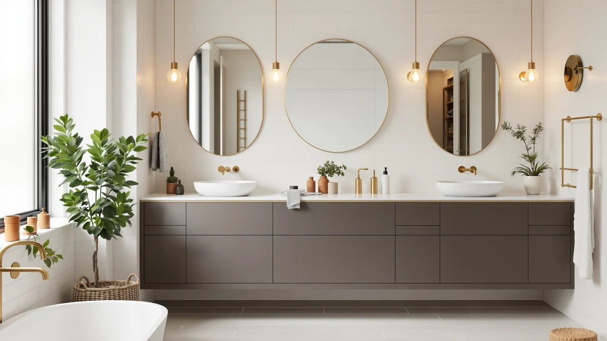

Best Bathroom Shelves for Small Bathrooms (2026)
Prices and picks verified as of August 2026. Independent, reader-supported reviews.


Quick Answer
The Kitsure Over the Toilet Storage is the best bathroom shelf for a small bathroom if you want the most storage without giving up floor space. It stacks nine tiers above your toilet tank and costs less than most freestanding cabinets. Want doors instead of open shelving? The Homhedy Small Bathroom Storage Cabinet is our runner-up.
Our pick: Kitsure Over the Toilet Storage — $49.99 Check Price on Amazon
Bottom line: our top pick is the Kitsure Over the Toilet Storage at $49.99. The best budget option is the QEEIG Bathroom Shelves Over Toilet - Wall Mounted Floating at $24.82.
Things to Know Before You Buy
- Measure the tank-to-door gap first. A 68-inch over-toilet tower can hit a light fixture or medicine cabinet in a small room, so check the clearance before you buy.
- Depth matters more than height. In a small bathroom, depth is the dimension that eats into the space you need to walk past the toilet, so look for units under 9 inches deep.
- Open shelving shows clutter. A unit with at least one enclosed cabinet or drawer keeps a small bathroom looking tidy when everything is visible from the doorway.
- Metal-and-wood frames outlast all-plastic units. They hold more weight, which matters once you stack towels or a spare pack of toilet paper.
- Assembly quality varies by unit. Check the pros and cons for each of the best bathroom shelves for small bathrooms below before you buy.
The best bathroom shelves for small bathrooms give you real storage without stealing the floor space you need to open a door or step out of the shower. In a cramped half-bath or an apartment bathroom where a full vanity will not fit, every inch of vertical wall space and every gap above the toilet tank becomes prime real estate. We looked at over-toilet towers, slim cabinets, and open shelving units built for tight footprints, then narrowed the field to the pieces that hold the most without making the room feel smaller.
Our pick, the Kitsure Over the Toilet Storage, won out because it turns dead space above the tank into nine usable tiers for under $50. If you want closed doors instead of open shelves, the Homhedy Small Bathroom Storage Cabinet and the BEWISHOME Bathroom Storage Cabinet Small both fit the same 7.9-inch-deep footprint and hide clutter behind cabinet doors. On a tight budget, look at the QEEIG Bathroom Shelves Over Toilet, a three-piece set that costs about half as much as our top pick.
We compared frame materials, published weight limits, footprint dimensions, and verified buyer ratings across dozens of small-bathroom storage listings before choosing the picks below. Each section names the honest drawbacks we found, along with the features that look good in a product photo. For more ways to free up space, see our guide to maximizing small bathroom storage.
Why You Should Trust Us
I am Ilane Tall, and I write about home organization and small-space bathroom layouts for Best Bathroom Storage. I have furnished and re-furnished my own small apartment bathroom more times than I can count, which means I have personally dealt with the tape-measure math of fitting a shelf unit between a toilet tank and a doorframe. No brand pays me to feature its product, and the affiliate links here do not change which units make this list.
For this guide on the best bathroom shelves for small bathrooms, I reviewed manufacturer specs, checked verified buyer photos against the marketing images, and cross-referenced weight limits with real reviews rather than product descriptions. When a unit had a pattern of complaints, I wrote that down instead of leaving it out.
How We Picked
We started with over-toilet towers, slim freestanding cabinets, and wall-adjacent shelving units marketed specifically for small bathrooms, then cut anything deeper than 9 inches, since depth is what actually crowds a tight room. To qualify for this list of the best bathroom shelves for small bathrooms, a unit had to use a metal-and-wood or metal-and-engineered-wood frame rather than all-plastic construction, because sturdier frames hold more weight without wobbling when you reach for a towel.
We also gave preference to pieces with at least one enclosed compartment, since fully open shelving tends to look cluttered fast in a room where everything is visible from the doorway. We dropped units with a pattern of assembly complaints or documented tipping issues in verified reviews.
How We Compared
We compared the published dimensions of each unit against a standard small bathroom layout: roughly 30 inches of clearance between the toilet tank and the nearest wall or door swing. We checked verified buyer ratings and review counts for recurring complaints about wobbling, missing hardware, and shelf sag under normal bathroom items like towels and larger toiletry bottles.
Where a manufacturer listed a weight capacity per shelf, we noted it and flagged units where the number seemed optimistic given the frame material. We also weighed price against material and configuration to see which of the best bathroom shelves for small bathrooms earned their premium and which felt overpriced for what you get. See our buying guide for more on how we evaluate bathroom storage generally.
Our Picks

Kitsure Over the Toilet Storage
What we like
- Nine adjustable tiers turn unused space above the tank into real storage
- Metal frame with wood-look shelves holds towels and heavier bottles without sagging
- Freestanding design means no drilling into tile or drywall
Flaws but not dealbreakers
- At 68.7 inches tall, it can crowd a room with a low light fixture or medicine cabinet
- The base needs careful leveling on bathrooms with slightly uneven tile
| Material | Metal / wood |
| Size | 9 Tiers (68.7"H) |
The Kitsure Over the Toilet Storage is the tallest piece in this roundup at 68.7 inches, and it earns that height by stacking nine tiers of shelving directly over your toilet tank. That is the one patch of a small bathroom almost nobody uses, and turning it into storage means your towels, extra toilet paper, and toiletries stop competing for space on the vanity or the floor. The frame is metal, which keeps the whole tower stable even when the shelves are loaded with heavier items like a stack of bath towels or a full-size bottle of shampoo.
At $49.99, it costs less than most cabinets in this guide while offering more individual storage tiers. The tradeoff is that the shelving is open, so anything you put on it is visible from the doorway, which matters if you like a tidy-looking bathroom. A few buyers mentioned the base needs careful leveling on bathrooms with slightly uneven tile, and the top tiers require a step stool if you are shorter than average. If you can live with open shelves and do not mind reaching up for the top tier, this is the pick that gets you the most storage for the least money among the best bathroom shelves for small bathrooms.

Homhedy Small Bathroom Storage Cabinet
What we like
- Enclosed cabinet doors keep toiletries and cleaning supplies out of sight
- 7.9-inch depth fits beside a toilet or in a slim gap without blocking the door swing
- Combines a cabinet base with open top shelving for mixed storage needs
Flaws but not dealbreakers
- At 31 inches tall, it holds less total volume than the taller over-toilet towers
- The particleboard-backed panels are less forgiving of a damp bathroom than solid wood
| Material | Metal / wood |
| Size | 7.9"D x 14.6"W x 31"H |
The Homhedy Small Bathroom Storage Cabinet solves a problem the open-shelf towers in this guide do not: it hides your stuff. At 7.9 inches deep and 14.6 inches wide, it slides into a gap beside a toilet or vanity without eating into the walking space a small bathroom cannot spare, and the enclosed cabinet doors keep cleaning supplies, extra rolls of toilet paper, and half-used bottles out of view.
The 31-inch height keeps it well under the taller over-toilet units here, which means less total storage but also less visual bulk in a room where every piece of furniture reads as clutter. The metal-and-wood build feels solid for the $44.54 price, though a few buyers noted the back panels are particleboard rather than solid wood, so it is worth wiping up splashes quickly rather than letting moisture sit against the cabinet back. If hidden storage matters more to you than maximum capacity, this is the pick to reach for.

BEWISHOME Bathroom Storage Cabinet Small
What we like
- Same 7.9-inch depth and 31-inch height as the Homhedy, so it fits the same tight spots
- Priced about $8 lower than the Homhedy for a comparable cabinet-and-shelf layout
- Metal frame keeps the cabinet stable against a wall or beside a toilet
Flaws but not dealbreakers
- Fewer verified buyer photos available to confirm long-term durability compared to the Homhedy
- The enclosed compartment is on the small side for anything bulkier than travel-size toiletries
| Material | Metal / wood |
| Size | 7.9" D x 14.6" W x 31" H |
The BEWISHOME Bathroom Storage Cabinet Small shares almost identical dimensions with the Homhedy above, at 7.9 inches deep, 14.6 inches wide, and 31 inches tall, which means it solves the same small-bathroom space problem: a narrow footprint with an enclosed compartment for anything you do not want on display.
At $35.99, it undercuts the Homhedy by about $8, making it the better pick if price matters more to you than brand history. The metal frame keeps it steady once loaded, though the enclosed compartment itself is modest in size, better suited to travel-size toiletries and rolled hand towels than bulkier items like a hair dryer or a stack of bath towels. Given the near-identical footprint to the Homhedy, this comes down to price: if you do not need a longer review history for reassurance, this is the cheaper way to get the same shape of storage among the best bathroom shelves for small bathrooms.
Homhedy Small Bathroom Storage Cabinet
What we like
- Enclosed cabinet doors keep toiletries and cleaning supplies out of sight
- 7.9-inch depth fits beside a toilet or in a slim gap without blocking the door swing
- Combines a cabinet base with open top shelving for mixed storage needs
Flaws but not dealbreakers
- At 31 inches tall, it holds less total volume than the taller over-toilet towers
- The particleboard-backed panels are less forgiving of a damp bathroom than solid wood
| Material | Metal / wood |
| Size | 7.9"D x 14.6"W x 31"H |
The Homhedy Small Bathroom Storage Cabinet solves a problem the open-shelf towers in this guide do not: it hides your stuff. At 7.9 inches deep and 14.6 inches wide, it slides into a gap beside a toilet or vanity without eating into the walking space a small bathroom cannot spare, and the enclosed cabinet doors keep cleaning supplies, extra rolls of toilet paper, and half-used bottles out of view.
The 31-inch height keeps it well under the taller over-toilet units here, which means less total storage but also less visual bulk in a room where every piece of furniture reads as clutter. The metal-and-wood build feels solid for the $44.54 price, though a few buyers noted the back panels are particleboard rather than solid wood, so it is worth wiping up splashes quickly rather than letting moisture sit against the cabinet back. If hidden storage matters more to you than maximum capacity, this is the pick to reach for.
BEWISHOME Bathroom Storage Cabinet Small
What we like
- Same 7.9-inch depth and 31-inch height as the Homhedy, so it fits the same tight spots
- Priced about $8 lower than the Homhedy for a comparable cabinet-and-shelf layout
- Metal frame keeps the cabinet stable against a wall or beside a toilet
Flaws but not dealbreakers
- Fewer verified buyer photos available to confirm long-term durability compared to the Homhedy
- The enclosed compartment is on the small side for anything bulkier than travel-size toiletries
| Material | Metal / wood |
| Size | 7.9" D x 14.6" W x 31" H |
The BEWISHOME Bathroom Storage Cabinet Small shares almost identical dimensions with the Homhedy above, at 7.9 inches deep, 14.6 inches wide, and 31 inches tall, which means it solves the same small-bathroom space problem: a narrow footprint with an enclosed compartment for anything you do not want on display.
At $35.99, it undercuts the Homhedy by about $8, making it the better pick if price matters more to you than brand history. The metal frame keeps it steady once loaded, though the enclosed compartment itself is modest in size, better suited to travel-size toiletries and rolled hand towels than bulkier items like a hair dryer or a stack of bath towels. Given the near-identical footprint to the Homhedy, this comes down to price: if you do not need a longer review history for reassurance, this is the cheaper way to get the same shape of storage among the best bathroom shelves for small bathrooms.

QEEIG Bathroom Shelves Over Toilet
What we like
- Lowest price in this guide at $26.82
- Three separate pieces let you arrange shelving around your toilet's specific tank shape
- Lightweight enough for one person to assemble and reposition without help
Flaws but not dealbreakers
- Individual shelves offer less total capacity than a single tall tower like our top pick
- Open design means everything stored on it stays visible from the doorway
| Material | Metal / wood |
| Size | 3pcs |
The QEEIG Bathroom Shelves Over Toilet is the budget pick in this guide, and it takes a different approach from the single-tower designs above: instead of one tall unit, you get three separate pieces you can arrange around your toilet's tank and lid. That flexibility helps in bathrooms where an odd-shaped tank or a low window means a single rigid tower will not sit flush against the wall.
At $26.82, it costs roughly half what our top pick does, though you are trading some total storage capacity for that price and for the flexibility of separate pieces. Because the shelving stays open, anything you place on it is visible from the doorway, so it works best for neatly folded towels and matching containers rather than a jumble of half-used bottles. For renters or anyone furnishing a small bathroom on a tight budget, it covers the basics without the investment of a taller tower.

ALLZONE Bathroom Organizer Over The
What we like
- Thicker gauge metal frame feels noticeably more rigid than the lower-priced towers here
- Four wide tiers accommodate larger items like baskets and bulk-size bottles
- Adjustable shelf spacing fits taller items on lower tiers
Flaws but not dealbreakers
- At $89.99, it costs nearly twice as much as our top pick for fewer total tiers
- Four tiers means less total shelving than the nine-tier Kitsure at a much higher price
| Material | Metal / wood |
| Size | 4-Tier |
The ALLZONE Bathroom Organizer Over The is the upgrade pick here, built around four wide tiers rather than the narrower, more numerous shelves on our top pick. The frame uses a noticeably thicker gauge of metal, which shows up as less flex when you load the top tier with something heavier, like a stack of towels or a basket of cleaning supplies.
That sturdier build comes at a cost: $89.99 is nearly double what the Kitsure costs, and you end up with four tiers instead of nine, so the total shelf count is actually lower despite the higher price. The wider spacing between tiers does make it easier to store bulkier items, like a tissue box or a larger basket, that would not fit on a shallower shelf. This pick makes sense if stability and wider tiers matter more to you than maximizing the number of storage tiers for the price.
Quick Comparison
Here is how the best bathroom shelves for small bathrooms in this guide stack up on material, price, and what each one is built for.
| Product | Material | Price | Rating | Best for | Get it |
|---|---|---|---|---|---|
| Kitsure Over the Toilet Storage | Metal / wood | $49.99 | 4 | Most storage in the smallest footprint | View on Amazon → |
| Homhedy Small Bathroom Storage Cabinet | Metal / wood | $44.54 | 4 | Hidden storage in a narrow footprint | View on Amazon → |
| BEWISHOME Bathroom Storage Cabinet Small | Metal / wood | $35.99 | 4 | Same footprint as the Homhedy, lower price | View on Amazon → |
| Homhedy Small Bathroom Storage Cabinet | Metal / wood | $44.54 | 4 | Hidden storage in a narrow footprint | View on Amazon → |
| BEWISHOME Bathroom Storage Cabinet Small | Metal / wood | $35.99 | 4 | Same footprint as the Homhedy, lower price | View on Amazon → |
| QEEIG Bathroom Shelves Over Toilet | Metal / wood | $26.82 | 4 | Best budget pick for over-toilet shelving | View on Amazon → |
| ALLZONE Bathroom Organizer Over The | Metal / wood | $89.99 | 4 | Sturdiest build for heavier items | View on Amazon → |
What is the best bathroom shelf for a small bathroom with no extra floor space?
An over-toilet tower like the Kitsure Over the Toilet Storage is usually the better choice than a freestanding cabinet, since it uses the wall space above your toilet tank instead of floor space you do not have.
How much weight can a small bathroom shelf hold?
It depends on the frame material and the tier.
The Competition
We also looked at over-the-door hanging racks that clip onto the bathroom door itself. They are inexpensive, but they swing with the door every time you close it, which gets old fast, and hooks-only storage does not give you a flat surface for stacking folded towels.
Tension-pole shelving units, the kind that wedge between floor and ceiling, looked promising for their small footprint, but review patterns for several models flagged bowing shelves within a few months under normal bathroom item weight, so we left them out. Corner caddies solve a different problem, shower storage, rather than the general small-bathroom shelving need this guide covers, so we did not include them here even though they come up in the same searches.
We also passed on several all-plastic over-toilet towers priced near our budget pick. They matched the QEEIG on price but consistently scored lower in verified reviews for stability once loaded with anything heavier than empty bottles. After weighing all of this, the Kitsure Over the Toilet Storage remains our pick for the best bathroom shelves for small bathrooms overall.